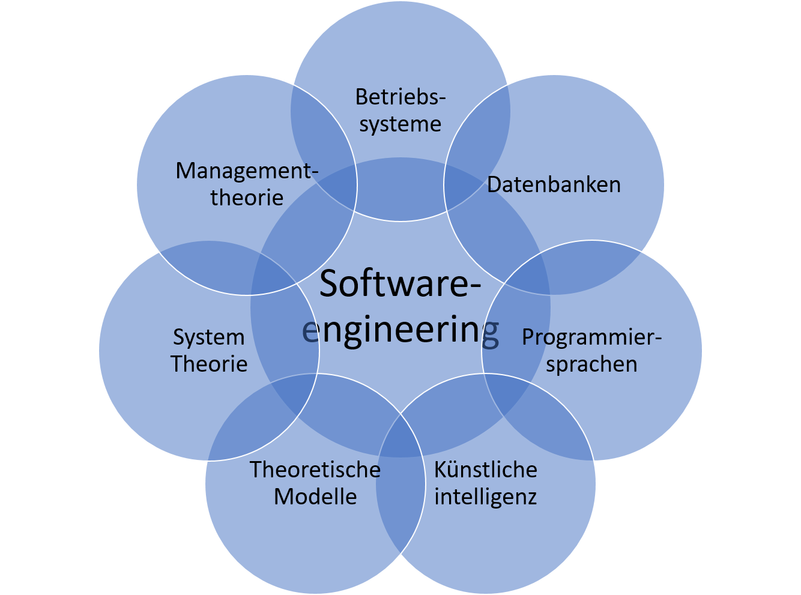

Was ist Software Engineering?
Marcel Lüthi Departement Mathematik und Informatik
Software engineering
The application of a systematic, disciplined, quantifiable approach to the development, operation, and maintanance of software.IEEE Standard Glossary of Software Engineering Terminology
Software engineering
The multi-person construction of multi-version software.
David Parnas, 1978
Programmieren vs. Software engineering

- Programmieren
- Programmieren im kleinen
- Software-engineering
- Programmieren im grossen
DeRemer, Kron "Programming-in-the large versus programming-in-the-small".
Proc. of the international conference on Reliable software. (1975)
Engineering vs. Software engineering

- Ingenieur kann System genau spezifizieren
- Belastbarkeit, Toleranzen,...
- Eigenschaften unabhängig vom Design spezifiziert
- Mathematik (Formeln) etabliert Eigenschaften
- Wie spezifiziert und verifiziert man Eigenschaften einer Buchhaltungssoftware?
Software engineering und System Design
- Software engineering immer Teil eines Systems
- Sehr interdisziplinär
- Kompromisse von allen Seiten verlangt
- Was wird in Hardware und Software implementiert?
- Was wird automatisiert, was manuell gemacht

Anforderungen an Software-Ingenieure
- Gute Programmierkenntnisse
- Kenntnisse in Algorithmen und Datenstrukturen
- Kann "im grossen" programmieren
- Kennt sich mit Design/Architektur aus
- Kann vage Requirements in genaue Spezifikationen übersetzen
- Ist offen für Veränderungen
- Kann zwischen Abstraktionsebenen wechseln
- Logisches (rationales) Denken
- Kommunikationsfähigkeit
Software Lebenszyklus
Softwareentwicklung ist nicht nur Programme schreiben
Beziehung zu anderen Bereichen der Informatik
Unit tests
- Was sind neben dem Programmieren die Haupttätigkeiten eines Softwareentwicklers?
- Warum ist der "Multi-version" Aspekt in Parnas' Definition von Software Engineering essentiell?
- Erkläre den Unterschied zwischen Software-engineering und Programmieren
- Warum sollte beim Entwickeln einer Software immer das gesamte System betrachtet werden?
- Weshalb gibt es im Software Engineering viel Überlapp mit anderen Bereichen der Informatik?